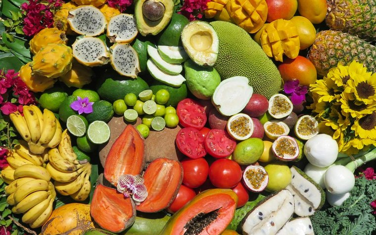

Ayci - Nature's Confectionery

Tropical Fruits Galore
At our vibrant farmer's market, Ayci, you'll discover a colorful array of tropical fruits sourced directly from local growers, each offering a tantalizing taste of paradise. From the succulent sweetness of papayas to the zesty charm of key limes, there's something to delight every palate. Feast your eyes on the emerald-green kiwis, their fuzzy exteriors concealing a treasure trove of tangy-sweet juiciness. Nearby, Chinese papayas beckon with their buttery flesh and musky aroma, while vibrant mangoes entice with their sunny hues and tropical fragrance. Don't miss the petite passion fruits, their wrinkled exteriors belying the lusciousness within, or the creamy goodness of ripe avocados, perfect for indulgent smoothies or savory salads. And of course, no tropical fruit selection would be complete without the bright acidity of key limes, adding a zesty twist to your culinary creations. Whether you're craving a refreshing snack or seeking inspiration for your next culinary adventure, Ayci is your one-stop destination for the finest tropical fruits, ethically sourced and bursting with flavor. Our ethically sourced tropical fruits not only offer sweetness your body actually needs, but it also support a community-driven approach to food production because at Ayci we prioritize environmental stewardship and social responsibility.
Satisfy Your Cravings
Grab your sweet treats of varying colors to decorate your next sweet treat. Perfect for cakes, smoothie bowls, charcuterie boards and more! Take a look our other offerings below to satisfy all of your sweet needs, with all of the nurtional benefits (and none of the negative implications):
- Recipes
- Blog
- Bulk Order
- Catering & Arrangemnts